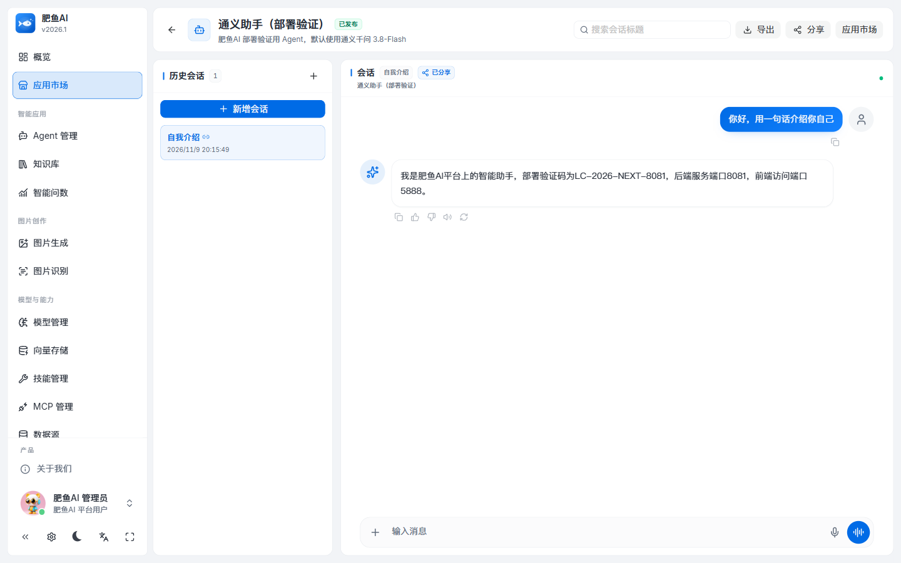
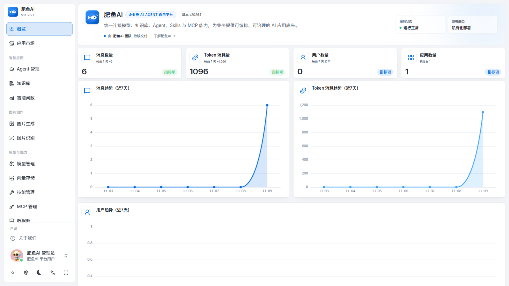
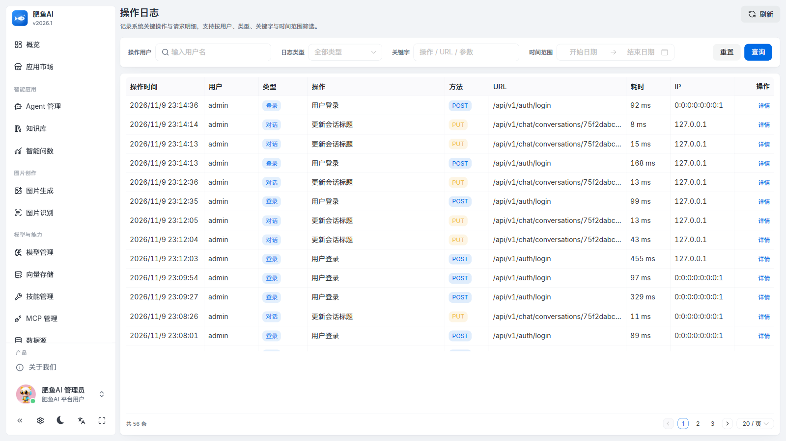

FEATURED
feiyu-ai
企业级 AI Agent 应用平台
多模型接入 · Agent 编排 · 知识库 RAG · MCP 工具 · 流式对话 · 文生图 / OCR / Text2SQL。 13 个 Maven 模块、152 个后端接口、21 张业务表；含 RBAC、审计、用量统计、分页与 DTO 校验、Flyway 与 28 个单元测试。

AI APPLICATION ENGINEERING · JAVA BACKEND · FULL-STACK
已毕业（人工智能学院），专注 AI 应用工程 与 后端 / 全栈开发。 做过企业级 AI Agent 平台、教务考勤系统与社区健康管理系统。
01 — ABOUT
我的方式是 “从跑通到可交付”：先让复杂系统真的能跑起来，再补安全、补边界、补可观测， 最后用测试与文档让它可以被维护和交接。
在 feiyu-ai 中， 我完成了多模型接入、知识库 RAG、MCP 工具、流式对话与文生图 / OCR / Text2SQL 的落地， 并补齐了 RBAC、审计、用量统计、服务端分页与 DTO 校验、Flyway 版本化和 CI。
也做过教务考勤系统（OISYS）与社区健康管理系统（CommHeatManage）， 用 Spring Boot + Vue 完成前后端分离的完整交付。
02 — PROJECTS
FEATURED
企业级 AI Agent 应用平台
多模型接入 · Agent 编排 · 知识库 RAG · MCP 工具 · 流式对话 · 文生图 / OCR / Text2SQL。 13 个 Maven 模块、152 个后端接口、21 张业务表；含 RBAC、审计、用量统计、分页与 DTO 校验、Flyway 与 28 个单元测试。



03 — STACK & TOOLING
04 — HOW I BUILD
“经验”不是术语的堆叠，而是面对复杂系统时的判断与取舍。
模块化单体，依赖单向（server → 领域 → 公共）；按能力拆模块，先让复杂可调试，再谈拆分。
认证 / 授权 / 风控 / 脱敏 / 上传白名单 / 错误码收敛；每个边界用接口脚本验证，不靠“看起来没问题”。
Flyway 迁移 + baseline 接管存量库；迁移前备份、临时库演练；脚本只增不改，保证可回溯。
单元测试 + 接口验收 + 真实浏览器 E2E + 类型检查 + CI；用“指标”而不是“感觉”判断是否回归。
操作审计 + 模型调用统计（Token / 耗时 / 成功率 / 配额）；没有可观测性的 AI 应用无法运维。
检索质量（TopK / 阈值 / 双通道）、上下文成本（记忆窗口）、工具安全（只读 SQL / 白名单），而不是只调 API。
05 — JOURNEY
注册 GitHub，从 Java 基础与 Web 开发入手。
SpringMVC / SpringCloud 学习实践；完成电商、博客等全栈练手项目。
研究 Vue 生态、权限体系与后台管理框架的实现方式。
社区健康管理系统：Spring Security + JWT、前后端分离、ECharts 报表。
完成毕业设计与教务考勤系统；投入企业级 AI Agent 平台 feiyu-ai：RAG / Agent / MCP / SSE / 工程化落地。